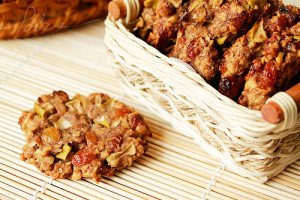

Набридло їсти несмачні хлібці, але хочеться зберегти фігуру? Їх можна замінити легким вівсяним печивом домашнього приготування.
Компоненти:
Заливаємо вівсяні пластівці теплим молоком або кефіром. Залишаємо розбухати на півгодини. Домішуємо яйця, масло рослинне і цукор.
Тісто виходить негустим, тому викладати його краще великою ложкою. У вівсяне тісто можна додати зерна льону або насіння гарбуза.
Випікати 15 хвилин при 185 °С.
Джерело рецепту:
http://dovidkam.com/kulinarni-recepty/domashnye-pechivo-recepti-prosti-i-shvidki-pokrokovo-z-foto.html